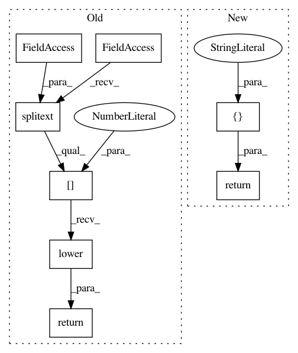

5ee3708f842d739d6effe24fbb0464c40e1a330d,ilastik/applets/dataSelection/opDataSelection.py,DatasetInfo,pathIsHdf5,#,269
Before Change
@classmethod
def pathIsHdf5(cls, path:str) -> bool:
return os.path.splitext(path)[1].lower() in (".ilp", ".h5", ".hdf5")
def isHdf5(self) -> bool:
return self.pathIsHdf5(self.externalPath)
After Change
@classmethod
def pathIsHdf5(cls, path:str) -> bool:
return PathComponents(path).extension in [".ilp", ".h5", ".hdf5"]
def isHdf5(self) -> bool:
return self.pathIsHdf5(self.externalPath)
In pattern: SUPERPATTERN
Frequency: 3
Non-data size: 8
Instances
Project Name: ilastik/ilastik
Commit Name: 5ee3708f842d739d6effe24fbb0464c40e1a330d
Time: 2019-07-12
Author: tomaz.vieira@embl.de
File Name: ilastik/applets/dataSelection/opDataSelection.py
Class Name: DatasetInfo
Method Name: pathIsHdf5
Project Name: developmentseed/label-maker
Commit Name: 6533f4a2123077c55d3a0c8bc04bb5e71c8b36de
Time: 2018-05-08
Author: jreiberkyle@users.noreply.github.com
File Name: label_maker/utils.py
Class Name:
Method Name: is_tif
Project Name: ilastik/ilastik
Commit Name: 5ee3708f842d739d6effe24fbb0464c40e1a330d
Time: 2019-07-12
Author: tomaz.vieira@embl.de
File Name: ilastik/applets/dataSelection/opDataSelection.py
Class Name: DatasetInfo
Method Name: pathIsN5